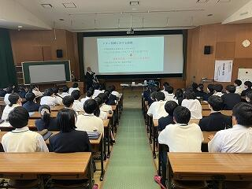
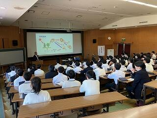
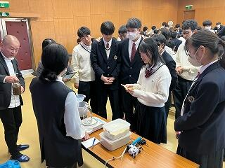
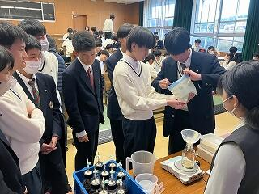
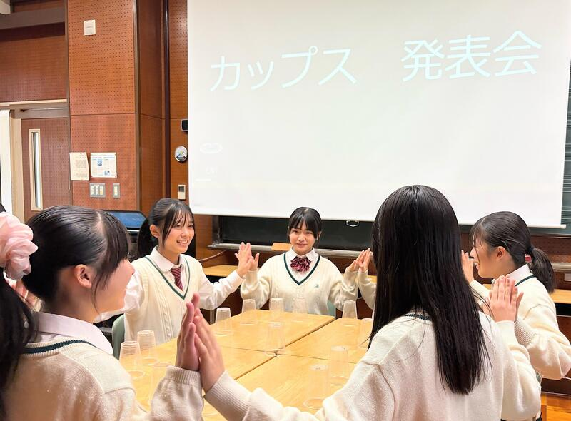
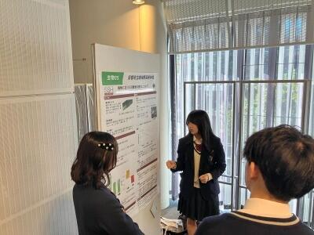
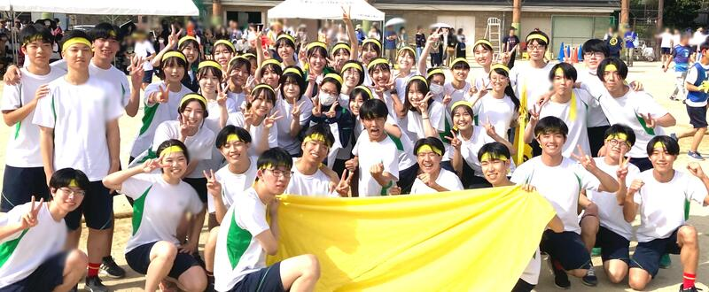
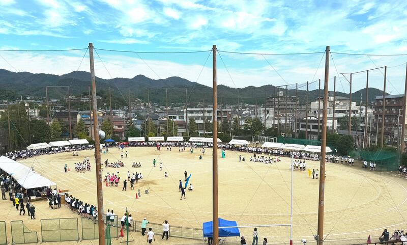

SAGANO BLOG
- >
- SAGANO BLOG
- >
- すべて(時系列)
2024年11月15日
１１月８日(金)､第１学年専修コースを対象に、京都大学大学院農学研究科助教の大土井 克明先生と、本校卒業生である櫟原さんにご講演をいただきました。
講演ではまず大土井先生から、自然界における資源循環の仕組みをはじめ、現在の人間社会における食糧生産の課題と、その解決策としてのメタン発酵についてお話いただきました。
 
続いて、現在博士後期課程で地域環境科学を専攻されている櫟原から、ご自身の研究と大学生活についてのお話をしていただきました。生徒たちは普段聞けない研究の話はもちろん、大学生活についても興味を持って聞いている様子でした。
お話の後、生徒が持ってきた物を使ってメタン発酵の実験をしました。
 
この実験は櫟原さんが実際に行っておられる実験で、研究室から道具や材料を持ってきてくださいました。生徒は砂糖や片栗粉などの発酵できそうなものから、消しゴムやチョークのような発酵できなさそうなものまで、様々なものを持ってきおり、現在は、探究委員が中心となって、どれが最もメタンを発生するのかを調べているところです。
今回のサイエンスレクチャーでは、メタン発酵を利用した資源循環についての知見が深まったことに加え、最前線で活躍しておられる研究者の考えを聴けたことは、生徒にとって今後の進路選択の参考になったと思います。また、卒業生のお話を聴けたことで、大学に進んだ後の姿を少し想像できるようになったのではと思います。
2024年11月15日
本日、音楽の授業にて、カップスの演奏発表会が行われました。
プラスチックコップの音を基本に手拍子や足拍子で、まるで踊っているかのように、リズムを刻んでいきます。

また、その他の芸術科目も期末テスト後に開催される、芸術文化展に向けて
作品作りの真っ最中です。

本年度は「ほんまもんの学び」をテーマに、
12月9日(月)〜14日(土)コモンホールにて芸術文化展を開催いたします。
保護者等の皆様のご招待日もございます。
後ほど、さくら連絡網にてご連絡いたしますので、
ぜひ、お子様と共に「ほんまもんの学び」をご体感ください！
2024年11月11日
11月９日（土）、「令和６年度 みやびサイエンスガーデン」を京都工芸繊維大学で開催しました。このイベントは、京都府教育委員会と、SSH指定校である洛北高校・嵯峨野高校・桃山高校が主催となり、生徒たちが日々の探究の成果をポスターセッションの形式で発表しました。本校からは35件のポスター発表を行い、他校の生徒や先生方、来賓の方々と活発な議論交流を行いました。
本校２年生は、これまでスーパーサイエンスラボⅡで取り組んできた探究の経過を報告しました。
またサイエンス部が日々の研究の成果を報告しました。
.jpg)
.jpg)
準備の段階では初めてのポスター発表を不安に感じている生徒もいましたが、当日には、特に質問されたところを丁寧に説明するなど、それぞれ工夫しながら発表を終えることができました。今後は頂いた質問やコメントをもとにさらに実験を重ね、自身の研究についてより深く、探究していってくれることを期待しています。
 .jpg)
当日は発表生徒だけでなく１年生も見学に参加し、来年は自分たちがこの場で発表するというイメージを持つことができました。嵯峨野の探究の伝統はこうして次世代へとつながっていきます！
2024年11月11日
11月6日(水)1年5組の生徒がGI（グローバルインタラクション）の授業内で、トルコのTÜBİTAK高校とオンラインミーティングで交流しました。該当クラスの国際交流委員がその様子をまとめてくれました。
『それぞれの国についてスライドを使って発表を行いました。その発表の後に、トルコの高校生が「これは何ですか？」と白くて丸いものを見せてくれました。食べ物のようで、伸びていたので、「それは餅だと思います。」と伝えると嬉しそうに食べていたのが印象的でした。その後で餅を使った料理にはどんなものがあるのかも話しました。この交流を通して私は、たとえ国が離れていても、言語が違っていても、たわいのない会話で盛り上がることができるということを知りました。トルコについてはほとんど何も知りませんでしたが、この交流を機に勉強してみようと思いました。』
『他の国の価値観や文化を知れただけでなく、日本の文化も他の国に広がっていっているということを学びました。』

2024年11月07日
嵯峨野高校狂言部では、来る12月15日(日)に、今年の「嵯峨野高校狂言の会」を開催します。
日時：令和6年12月15日(日) 午後2時開演(1時30分開場)
会場：冬青庵能舞台(京都市中京区両替町通夷川下ル、地下鉄「丸太町」「烏丸御池」駅から徒歩5分)
曲目：『舎弟(しゃてい)』、『萩大名(はぎだいみょう)』(以上嵯峨野高校生)、『太刀奪(たちうばい)』(茂山千五郎先生、茂山虎真先生、茂山竜正先生)
入場無料
＜申込方法＞
嵯峨野高校生･御家族は、配布した参加申込書をホームルーム担任へお渡しください。
学校外の方は、メールアドレス [email protected] へ、次の要領でお申し込みください。
・メールの題名は「狂言の会申込み」としてください。
・メールの本文には、次の内容を記載してください。個人情報は十分注意して管理いたします。
(1) 参加を希望される人数
(2) 各自のお名前
(3) 返信先のメールアドレス
定員(60名)まで先着順により、整理券をお渡しします。メールで申し込まれた方には、メールで整理番号を返信します。当日は、全席自由です。
なお、当日、発熱や風邪症状がある場合は、恐れ入りますが入場を御遠慮ください。
現在、茂山千五郎先生の指導のもと、部員3人が張り切って稽古中です。ぜひ御来場ください。
記事上の写真は、昨年の公演のものです。
2024年11月06日
10月31日木曜日７時間目、LHRの時間に２年生対象の進路ガイダンスⅡを行いました。
３つの分野で実施し、分科会によっては大学から講師の先生をお招きしました。
各会場とも、熱心に講義を聞き、これまでの自分自身の学習を振り返ったり、これから目指す未来について真剣に考えたりする２年生の姿がありました。
本格的に受験生となるこの時期、一日一日を大切に、じっくりと歩んでいきましょう。
2024年11月06日
10月28日(月)2年7・8組の生徒がSE（サイエンスイングリッシュ）の授業内で、考古学者のDr. Noxonを招きVR技術についての特別講義を受けました。該当クラスの国際交流委員がその様子をまとめてくれました。

『3D画像の作り方を学びました。色々な角度から何枚もの再現したい物体の写真をとってそれを元に3Dの画像が作られるのですが、大量の平面の写真がアプリで立体になるのが不思議で感動しました。考古学の世界で遺跡の再現や研究にこの技術が利用されていると知って自身のラボ活動でも利用できるかもしれないなと感じました。』
『3Dスキャンを実際に使用してみて、想像より早く簡単に3Dスキャンができることに驚いた。また、海外出身の先生が縄文時代について興味を持たれて、研究されていることも知ることができた。』
2024年11月06日
10月28日(月)1年3組の生徒がGI（グローバルインタラクション）の授業内で、韓国のHaesung International Convention High Schoolの生徒とオンラインミーティングで交流しました。該当クラスの国際交流委員がその様子をまとめてくれました。
『韓国の生徒たちとお互いの文化を紹介し合いました。中には日本語を学習している人もいて、ジブリ映画やちいかわの話で盛り上がることができたので楽しかったです！他の国の文化を知ることはとても面白いなと思いました。』
『私のグループでは、お互いの自己紹介の後、韓国の生徒から学校での一日の流れについて発表してもらいました。つづいて私たちのグループは日本の昔話について話しました。今回の交流で韓国の学校での過ごし方や韓国の文化などいろんなことが学べました。桃太郎を知っていたり日本の歌手や文化についても知ってくれていることが多く、嬉しかったです。』
2024年11月04日
11月3日に行われた、京都府高等学校総合文化祭放送部門の結果です。◎は全国総文香川大会出場、○は近畿総文鳥取大会出場です。
・朗読：2年生女子第3位◎、2年生女子第5位
・朗読新人戦：1年生女子第1位○
・アナウンス新人戦：1年生女子第1位○、1年生女子第5位
・ビデオメッセージ：2年生制作作品第1位◎
・オーディオメッセージ：1年生制作作品第2位
また、上位大会出場はなりませんでしたが、アナウンスで2年生男子1名、朗読新人戦で1年生男子1名、アナウンス新人戦で1年生男子2名が決勝進出を果たしています。
今回の大会では、番組作成・アナウンス原稿作成に於いて、非常に多くの皆様にお世話になりました。改めてお礼申し上げます。本当に有り難うございました。
今後とも放送部へのご声援をよろしくお願い致します。
2024年11月01日
黄組さん、優勝おめでとう！！

結果ももちろん大事だけれど、その過程にこそ「ほんまもんの学び」はあるのかもしれません。
なぜなら、最初の写真はまだ優勝が決まっていない午前中に撮ったもの。
3年生がこんな顔で体育祭を楽しんでいるなんて...。素敵だなぁ。
他の組もこの通り。

数学者として難問を解決し、名を世に響かせた京都大学理学博士の岡潔氏は、その著書『春宵十話』の中で「情緒が頭をつくる」と説いています。
みなさんを見ていると、そんな言葉をふと思い出すのです。
競技だけでなく、裏方の仕事も競技さながらに一生懸命。
何事も自ら考えて動くことで、学びに変えてしまう力があるのです。

（※ここで注目。右写真の左下の先生は単に「派手な人」ではないのです。きっと全ての色を身に付けることで、全部の生徒を応援しています。その愛情に感服。）

何事も、自ら楽しむ3年生のその姿に、後輩たちも学んでいます。
最後に、写真に撮られていることも気付かず、
鍛えられた見事な腕で、せっせと乱れたラインをなおす生徒の姿をお送りします。


...嵯峨野高校の良さを全て表している。
生徒のみなさんと穏やかな秋晴れの体育祭。ずっと見ていたくなる一日でした。

2024年11月01日
高校時代を夢中で駆け抜けている生徒のみなさん。

気付いていないかもしれないけど、今を精一杯楽しんでいるあなた達の姿はとても眩しく、素敵です。


2度と戻らない日々を、せめてカメラの中に留めておきたいと思うけれど、
日々、成長する姿を実感するばかり。
保護者等のみなさまも同じ気持ちでしょうか。
たくましい姿を見ていると、
いつか自分の足で、自分の道を歩み出す日は、そう遠くないのだと感じます。

どうかそれまで、嵯峨野高校の地を蹴って、大空へ羽ばたく力を養ってください。
《体育祭３へ続く》
2024年10月30日
10月21日、京都大学大学院農学研究科の丸岡毅さんに御来校いただき、本校の専修コース２年生に表題のタイトルで御講義いただきました。丸岡さんは、本校の2014年度卒業生で、現在は博士後期課程で化学生態学を専攻しています。

丸岡さんは、「蛾のフンからお茶をつくる」というユニークな研究が注目されており、その成果の1つとして商品化された「虫秘茶」は、一流の料理人にも高く評価されています。メディアからも注目され、NHKの人気番組にも出演されました。


今回は、さまざまな葉を餌とした蛾の糞のサンプルの意外な良い香りに驚かされたあと、蛾が葉を消化する過程で起こることや、虫の種類によって生じる違いなど詳細な分析結果について御講義いただきました。また、分析に用いた機器とその測定原理についても詳細に説明いただき、現在の学びが将来の研究につながっていることを実感できました。


御講義後は、研究内容の他、なぜ博士課程に進まれたのか等、様々な質疑応答が行われ、これからの進路を考えるにあたって大変有意義な時間となりました。


2024年10月28日
先週、嵯峨野高校の体育祭が挙行されました！
体育委員長の凛々しい選手宣誓が印象的でした。
プログラムの表紙も体育委員長（元美術部部長）が書いています。
学校生活も勉強も部活も最後の最後まで楽しんでやろうという意気込み、さすが嵯峨野生！あっぱれです！！
その決意を受け止める、各組の団長さん、気合い入ってます！

生徒の思いが届いたかのような秋晴れの空。

...しかし、忘れてはいけない。
嵯峨野生の素晴らしさは、表舞台だけではないのです。
前日の夕方、雨のグランドを手入れしてくれた運動部のみなさん、
朝早くから、グランド整備をしてくれた陸上部のみなさん、
きっと、この快晴は、あなたたちが呼んだのだと思います。
ありがとう！！！
《体育祭２へ続く》
2024年10月28日
２年生の授業アカデミックラボ「スポーツと環境ラボ」では、昨年度の生徒が考案した「竹モルック」の改良に挑戦しています。
実際に竹林へ行き、竹に関する知識を学んだ後、いただいた竹を加工しました。
モルックの魅力を広めることも活動の目的の一つですが、竹という材料の良さや放置竹林の問題について多くの方に知ってもらうことも目的としています。
そのためリーフレットを作り、竹モルックを体験していただいた方に配布することにしました。

10月19日（土）には、第21回みんなのスポーツフェスタで実際に多くの方に竹モルックを体験していただきました。
幼児から大人まで同じルールで楽しめるのがモルックの魅力です。
参加された皆さんに笑顔で楽しんでいただき、１本１本頑張って手作りした生徒たちも終始笑顔でした。
改善すべき点もいくつか見つかり、今後の活動の方針が見えたようです。
自分たちで考え、行動することで、生徒たちがどんどん逞しくなっているように感じます。
御協力いただいたNPO京都発竹流域ネット様、探究学習支援基金の皆様、京都モルック協会の皆様、ありがとうございました。
2024年10月21日
朝晩が涼しくなり、秋らしい気候になってきました。
夏が終わって、ようやく浴衣の完成が見えてきました。
ご心配なく。この浴衣は来年の夏に向けて作っていたのです（...たぶん）。
この活動を通じて、今年度の嵯峨野の教育テーマである「ほんまもん」の学びを、地元企業の和衣庵さまに、ご指導・ご支援いただきました。「ほんまもん」の皆さまから直接、日本の伝統文化である着物についてお教えいただいたことは、デザイン工芸部のみならず嵯峨野高校の芸術教育にとって、たいへん大きな収穫でした。ありがとうございました。
この浴衣は、今週末の京都府総合文化祭にて展示されます。
嵯峨野高校の美術部・デザイン工芸部をはじめ、京都府の高校生の力作が勢揃いします！
是非実物の作品をご覧ください！
【第41回京都府高等学校総合文化祭 美術・工芸部門】
日時：10月26日(土)9:00~17:00／27日(日)9:00~15:00
場所：みやこめっせ 日図デザイン博物館 地下1階
※入場無料
2024年10月09日

アカデミックラボ「京・平安文化論」です。
今年も『源氏物語』の魅力を知っていただくことを目的に、
「ちゅう源氏と巡る 源氏物語 京都スタンプラリー」を実施します。
『源氏物語』に関係する神社仏閣を巡り、その世界に触れていただきたいと考えています。
秋の京都をお楽しみください。
【日程】
１０月２６日（土）、２７日（日）
１１月２日（土）、３日（日）、４日（月休）の５日間です。
【場所】
スタンプ設置場所は、京都市内の『源氏物語』ゆかりの神社仏閣１２ヵ所と特設会場です。
➀京都御苑 ➁下鴨神社 ③上賀茂神社 ④雲林院 ⑤仁和寺 ⑥清凉寺
⑦野宮神社 ⑧天龍寺 ⑨廬山寺 ⑩清水寺 ⑪渉成園 ⑫東寺
〔特設会場〕古典の日フォーラム２０２４ （事前に応募された方のみ）
【台紙の配付】
・本校事務室
・京都市バス・京都バスの車内
・神社仏閣１２ヵ所（特設会場は除きます）
【景品】
スタンプを３つ集めると、オリジナルコットンバッグをプレゼント！
最新情報は、X（旧twitter）やInstagramでお知らせします。
X ＠kyo_heian_labo
Instagram @kyo_heian_labo です。
ぜひご参加ください！
京・平安文化論ラボ一同、お待ちしています！


{kind=link}
{kind=link}
{kind=link}
{kind=link}
{kind=link}
{kind=link}
{kind=link}
{kind=link}
{kind=link}
{kind=link}
{kind=link}
{kind=link}
{kind=link}
{kind=link}
{kind=link}
{kind=link}
{kind=link}
{kind=link}
{kind=link}
{kind=link}
{kind=link}
{kind=link}
{kind=link}
{kind=link}
{kind=link}
{kind=link}
{kind=link}
{kind=link}
{kind=link}
{kind=link}
{kind=link}
{kind=link}
{kind=link}
{kind=link}
{kind=link}
{kind=link}
{kind=link}
{kind=link}
{kind=link}
{kind=link}
{kind=link}
{kind=link}
{kind=link}
{kind=link}
{kind=link}
{kind=link}
{kind=link}
{kind=link}
{kind=link}
{kind=link}
{kind=link}
{kind=link}
{kind=link}
{kind=link}
{kind=link}
{kind=link}
{kind=link}
{kind=link}
{kind=link}
{kind=link}
{kind=link}
{kind=link}
{kind=link}
{kind=link}
{kind=link}
{kind=link}
{kind=link}
{kind=link}
2024年10月03日
{kind=link}
{kind=link}
{kind=link}
{kind=link}
{kind=link}
{kind=link}
第３弾はダンス同好会の生徒による演技です。踊っている生徒の皆さんも、拍手で応援する生徒たちの熱気も最高潮に達しました！
最後は全員で記念写真を撮影して終了しました。研修旅行委員の皆さん、「さいこうのおもいで」を演出してくれて本当にありがとうございました。
〒616-8226
京都市右京区常盤段ノ上町15番地
TEL 075-871-0723 FAX 075-871-0724
E-mail [email protected]
Copyright (C) 京都府立嵯峨野高等学校 All Rights Reserved.